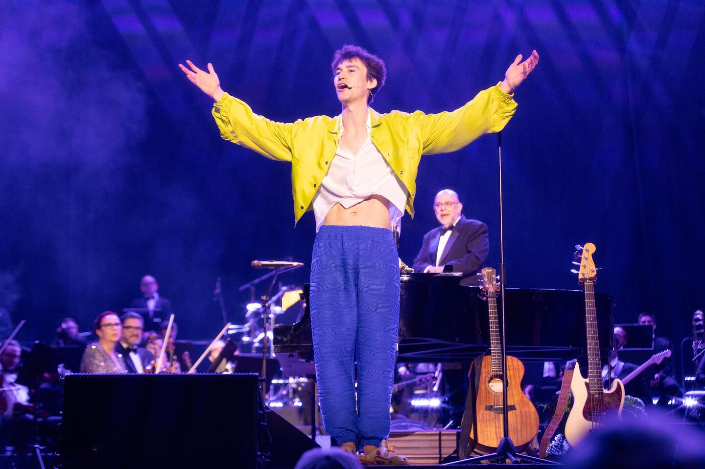
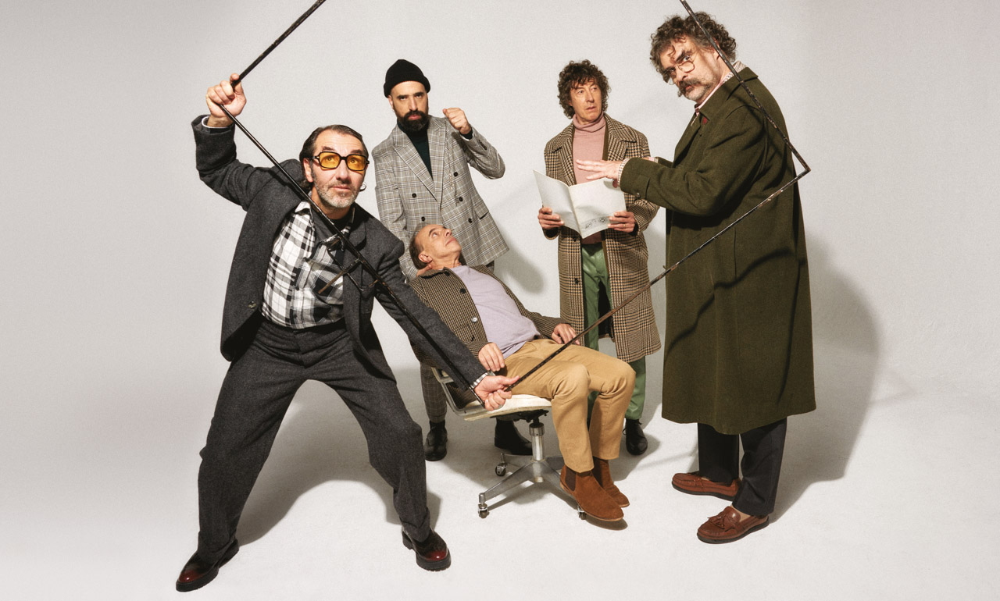

Artistas
Intérpretes de clase mundial con trayectoria en Viena, París y Carnegie Hall.

Jacob Collier
Ganador de 5 premios Grammy, pianista y arreglista multiinstrumentista reconocido mundialmente.

Orquesta Filarmónica
La orquesta más distinguida de Costa Rica, con más de 40 años de trayectoria artística.

Cuarteto de Jazz
Cuatro virtuosos del jazz moderno que han actuado en los festivales más prestigiosos de Europa.